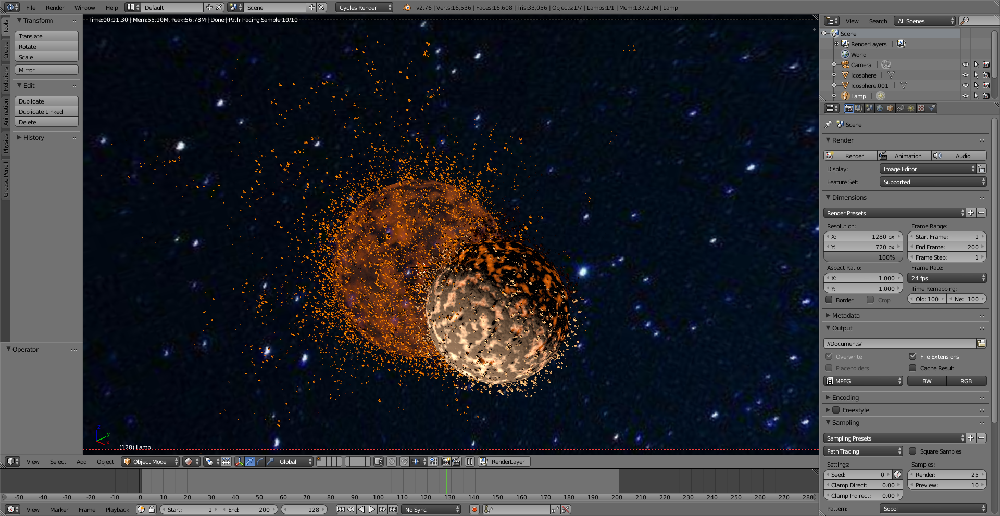
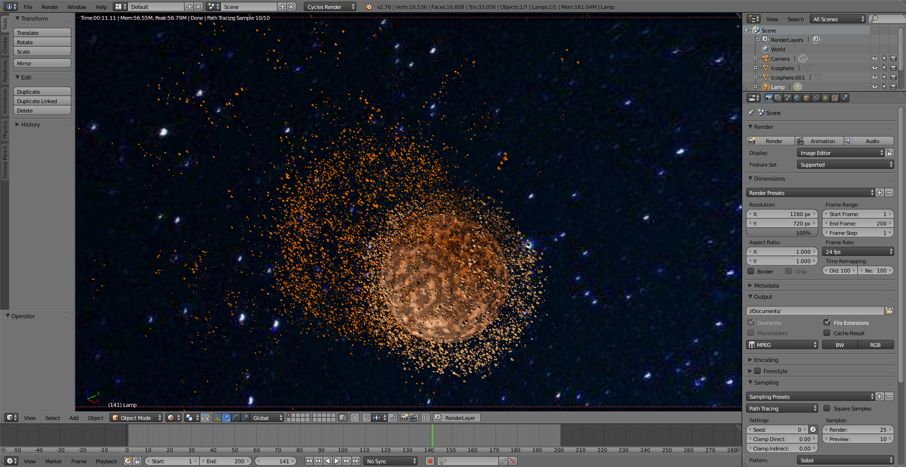
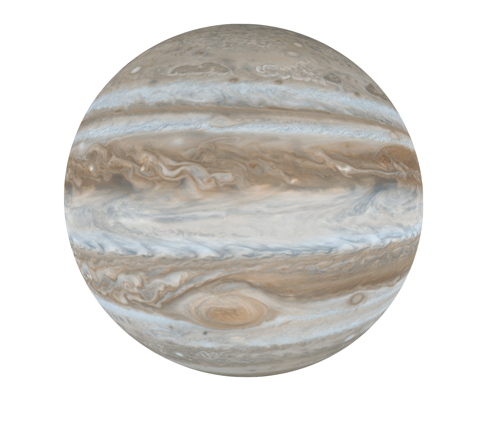

Overview
We intend to implement a simulation that produces a photorealistic visual rendering of two planets colliding which utilizes several techniques we have learned in this class including meshes, shading, texture mapping, ray tracing and physics simulation. Initially, our plan was to create planets that consist of point masses and compute the position and velocity of each point mass using the law of conservation of momentum, but we soon realize this is too computationally expensive to be practical. Hence, we turn to the industry practice of artistic rendering approach which is also able to render the planetary collision realistically.
Exploring visual effects using Blender
Before implementing our project directly, we first explored the pipeline of artistic rendering using Blender. We realized that when two planets collide, we need a ring-like structure called Torus between the two spheres to create the effects of explosions that emit light during the collision.

|
|
We also realize that during the collision, we need to apply shading that fades the planets as they disintegrate into pieces. We render the pieces as icospheres with the same shading as the planet with random sizes and positions. We also set their motion such that they travel outwards in every direction from the center of each planet.
|

|

|
To make the rendering even more realistic, we need to simulate the geological compositions and activities of the planet where there are terrains on the surface of the planets and magma erruptions in response to the other planet's gravity as they approach each other. To achieve this, we implemented bump mapping and displacement mapping on the surface of the planets. The shading on the surface of the planet also changes as they approach each other.
We then specify the light sources where Blender handles the ray tracing. We also change the background of the space. It takes about an hour to render the 200 frames shown below.

Implementing our own renderer
Having learned several keypoints about the workflow of rendering planetary collision on Blender, we are ready to implement our own renderer on nanoGUI. We first implemented sphereMesh objects with texture mapping of images of planet surfaces on them.
A) Modeling Planets & Texture Mapping
We successfully modeled our planets using sphere meshes with texture mapping. A planet is represented using a Sphere class. The sphere contains attributes like mass, radius, position of origin, and a “prev” field which is used to calculate the initial momentum so that the planets won’t collapse to each other. The results are as follows:
|  |

|
B) Creating the Universe Environment Lighting
In order to simulate the effect that the planets are contained within a universe, we rendered a giant sphere that encloses the planets inside. Applying a galaxy texture will create the universe.
C) Simulating gravity
We successfully modeled our planets using sphere meshes with texture mapping. A planet is represented using a Sphere class. The sphere contains attributes like mass, radius, position of origin, and a “prev” field which is used to calculate the initial momentum so that the planets don't collapse to the center. We use the famous universal law of gravity to calculate the forces exerted on each planet, and update the planets’ location using Verlet Integration.

C) Preliminary Results

|
|

|

|

|
Reflection on Progress
We have demonstrated preliminary results of realistic rendering of planetary collisions using Blender and we believe that we are heading in the right direction in implementing our own renderer. We have accomplished the construction of the solar system and the animation of the planets in our own renderer. Relative to our plan in our proposal, we have accomplished the mesh construction and texture mapping and are right on track in delivering a renderer of photorealistic planetary collisions. In the following weeks, we will be implementing the collisions and ray tracing.
Milestone Video and Presentation Slides
Slides